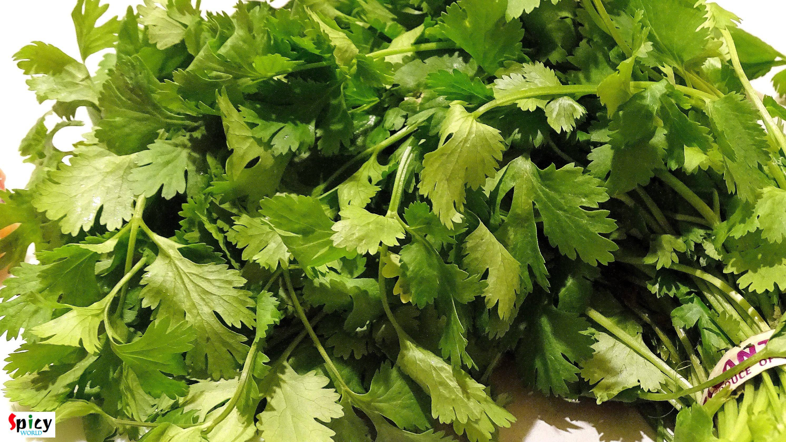
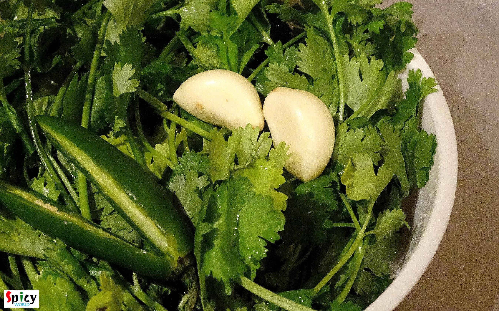
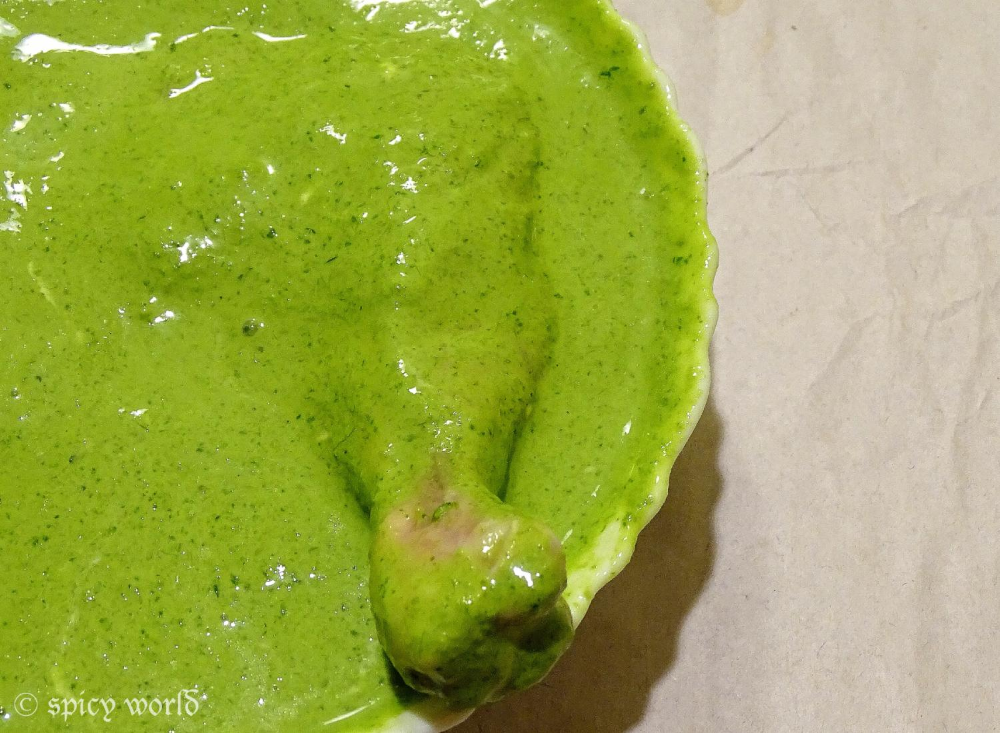
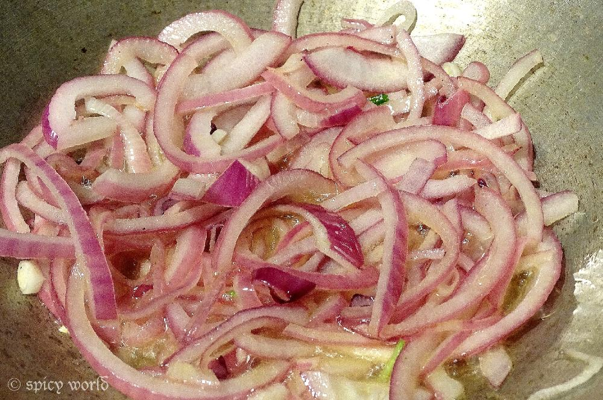
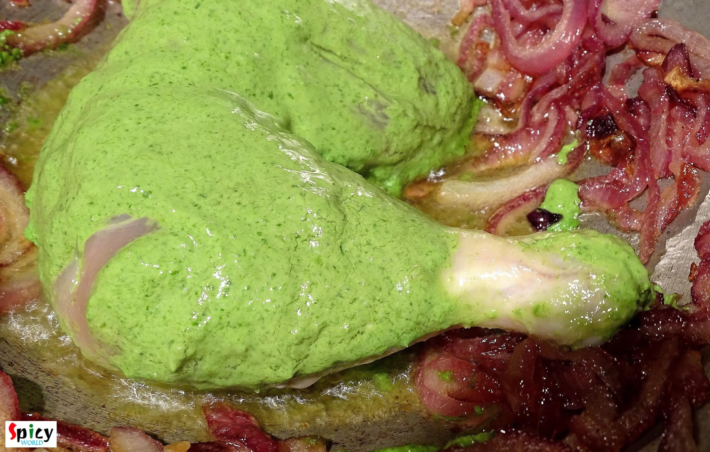
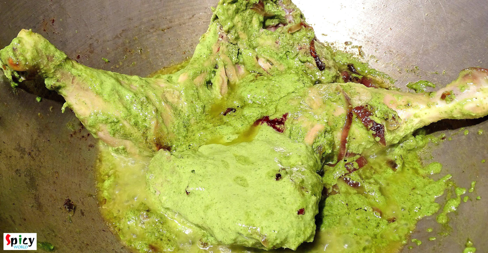
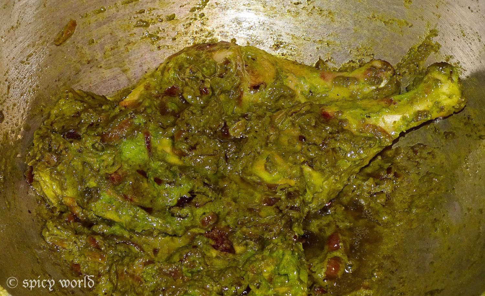
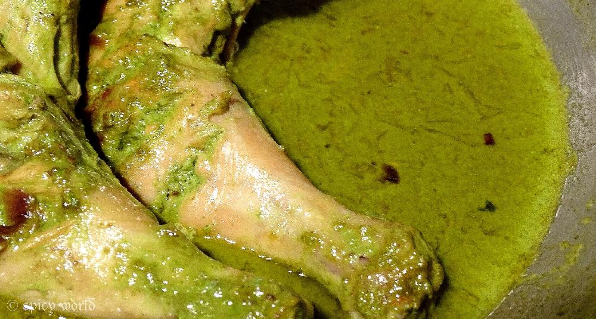
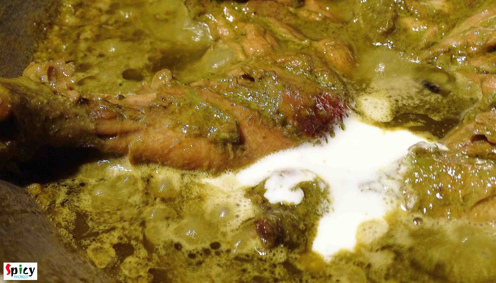
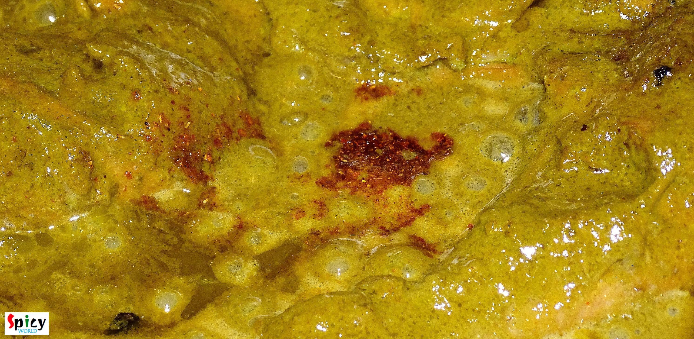

Dhaniya Chicken / Coriander Chicken / Dhonepata Chicken

When I was in college, I loved to do some cooking with my mom. 'Dhaniya Chicken' was one of my teenage speciality dish. Dhaniya / dhonepata means coriander leaves. I only prefer to use garlic and don't like to use whole spices for this dish. According to me, the strong aroma of whole spices dominate the flavour of fresh coriander leaves. After a long time, last night I made 'dhonepata chicken' along with some steamed rice and enjoyed every moment of prepping, cooking and eating just like those college days 😊. Try this in your kitchen and share some of your teenage story with me.

Ingredients
- 2 big chicken legs.
- 1 cup of onion slices.
- 3 cups of chopped coriander leaves.
- 2-3 cloves of garlic.
- 2-3 green chilies.
- 6 tbsp of curd / yogurt.
- 3 Teasoppns of heavy cream.
- Salt and sugar.
- ½ Teasoppn of garam masala powder.
- Warm water.
- 5 tbsp of white oil.

Steps
Always use fresh coriander leaves for this dish. Cut the stems and wash those properly.

Put the coriander leaves, garlic and green chilies into a blender. Add a dash of water and make a smooth paste.

Add this green paste and yogurt in a mixing bowl. Mix it well with your hand. Put the chicken pieces into the marination and keep it for 1-2 hours.

Now heat oil in a pan. Add the slices of onion with pinch of salt. Fry those till become golden in color.

After that shake off some marination from the chicken legs and put it in the hot oil. Fry both sides for 5 minutes in high flame.

Then add rest of the marination, some salt and 1 Teasoppn sugar into the chicken. Mix it and cook it in medium flame for 15 minutes.

When the oil starts separating, reduce the flame and again cook this for 15-20 minutes. If the gravy becomes dry you can add little water.

Now add some warm water and cook it till the chicken becomes fully tendor.

Always make the gravy thick for this dish. When the chicken is totally cooked add the cream. Mix it and check the seasoning. Adjust it according to your taste.

Lastly add some garam masala powder, mix it for one more time and turn off the heat.

Your Dhaniya chicken is ready ...
- Enjoy this hot with steamed plain rice or roti ...


Leave Your Comments